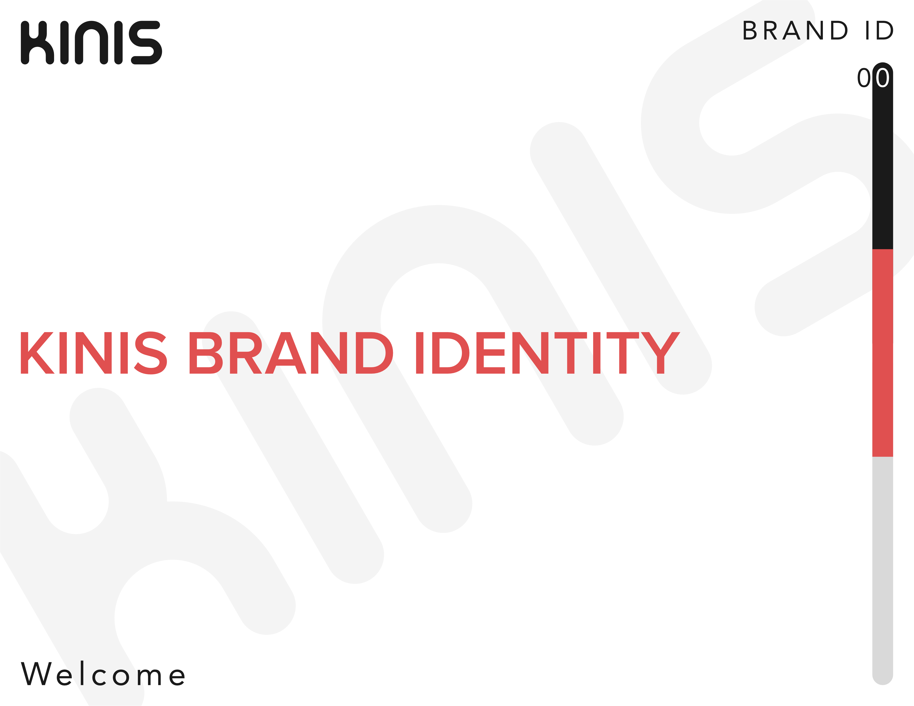
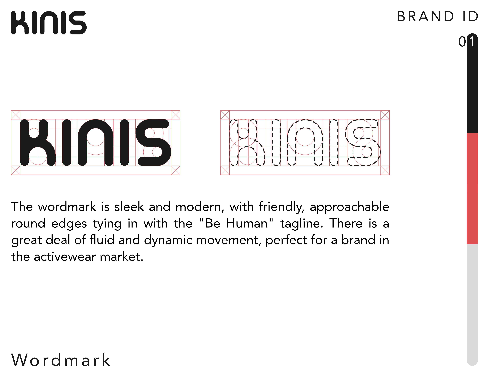
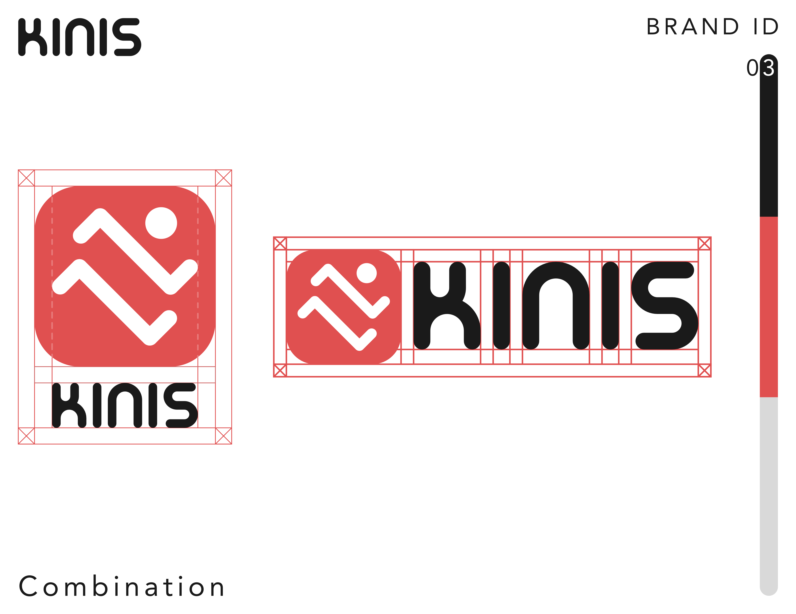
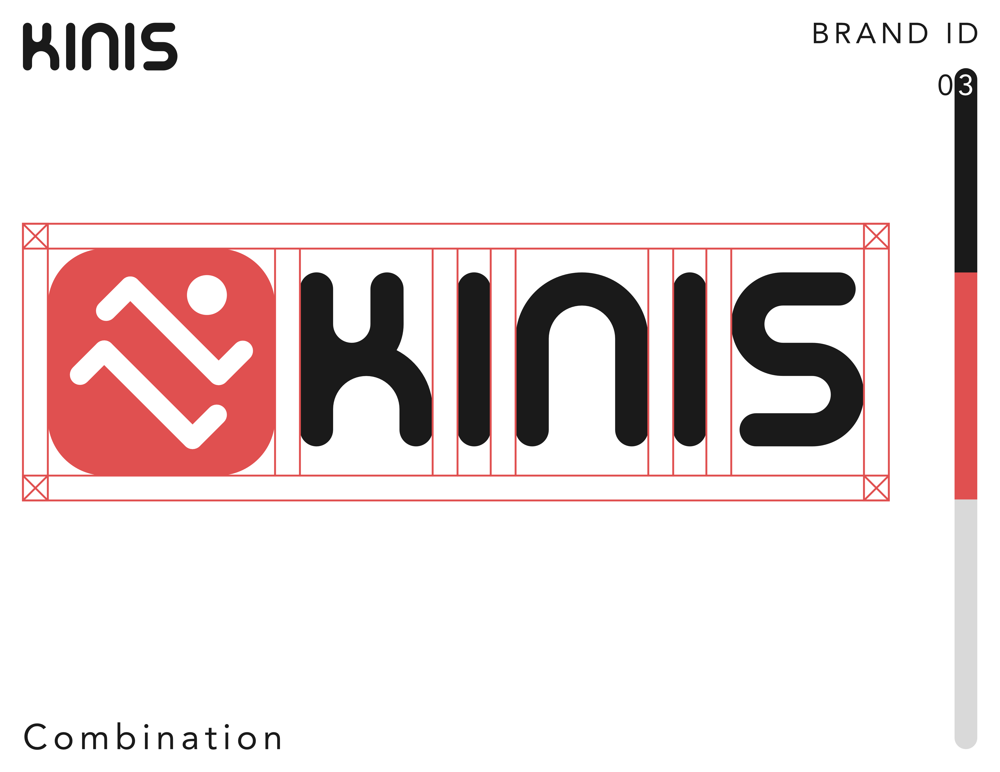
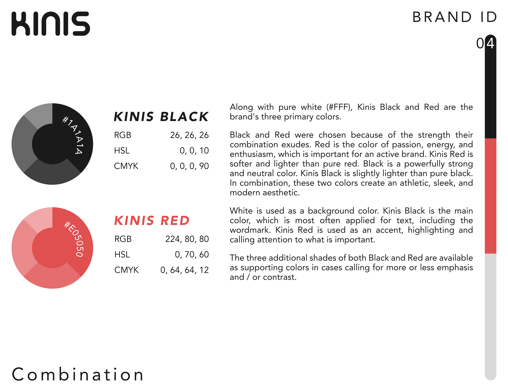
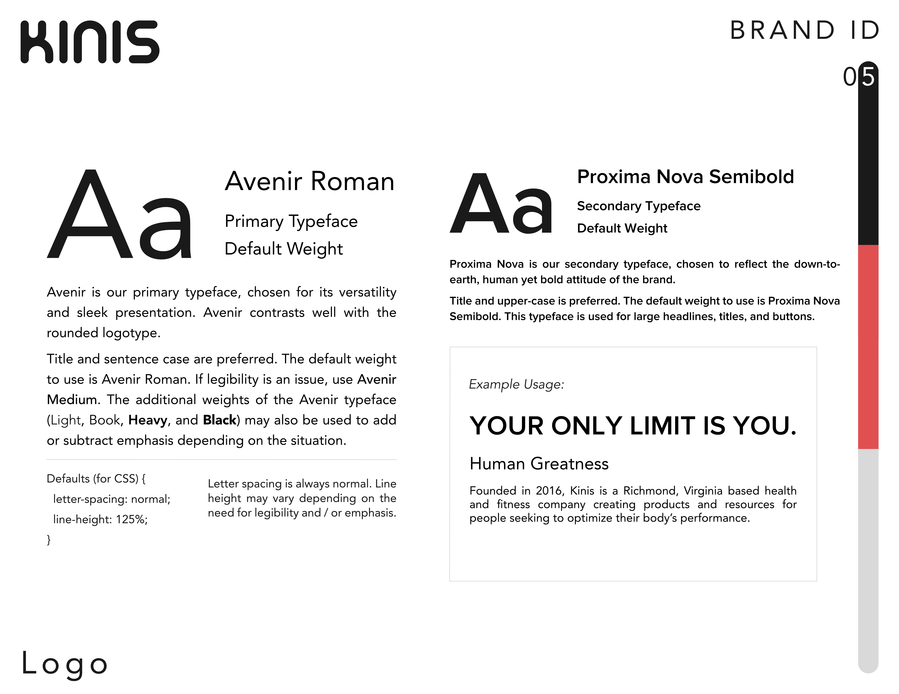
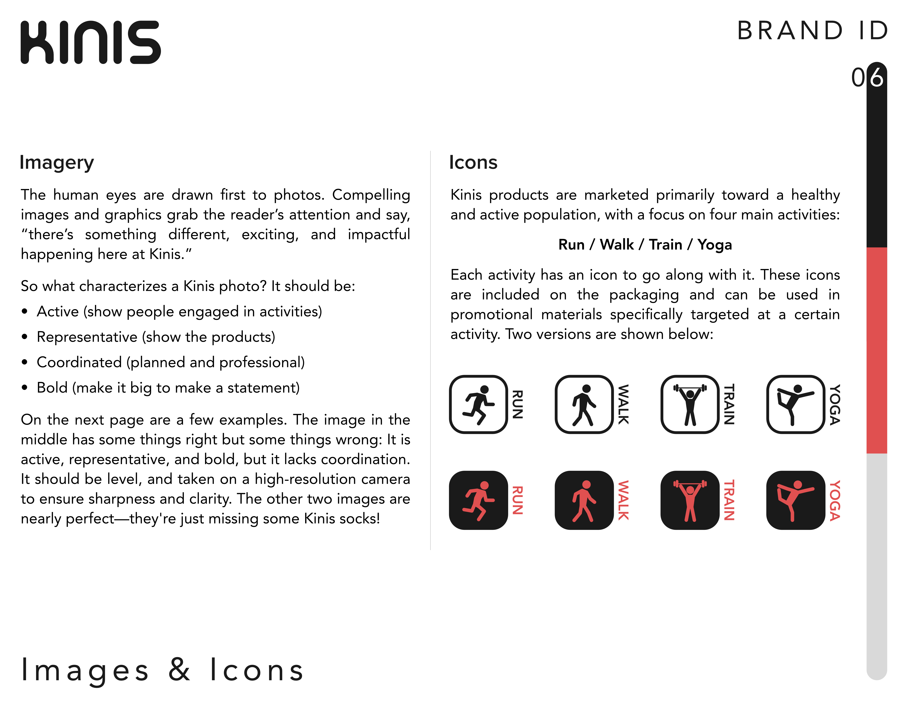

Kinis Co
Barefoot Training Footwear
The Ask
I was tasked with creating a comprehensive Brand Identity for a small startup apparel company in Richmond, VA. This includes a logo, custom wordmark, color palette, typography guidelines, and image & icon guidelines.
The Process
The first thing the client wanted was a new logo. This is what they had:
Seeing as they produce barefoot training footwear, I assumed the shape was meant to resemble a foot. I was wrong: it's a calf muscle. So for the new logo, they wanted to stick with the kinesiology / human body theme. After some initial sketches and digital experiments ...


... I found something I liked. I formed a "K" with the natural outline of a bare foot and used a red color very similar to the old logo to accentuate the toe prints.
TOOLS: 
The Result






